확장 본문 (Extended Report)
← Extended Report 개요 · 방법론·데이터 정합성 · 인터랙티브 · 부록 · 보고서(PDF)
그림 번호 안내
- 메인 PDF(Data Brief)는 본문 흐름에 맞춰 그림을 1-8로 재번호했다.
- Extended Report는 인터랙티브/부록 호환을 위해 기존 그림 1-12 번호를 유지한다.
- PDF와 웹을 오가며 볼 때는 Data Brief ↔︎ Extended Report 연결표가 가장 빠르다.
Data Insight (v2)
핵심 메시지
- 메시지 1: 정책근거는 고르게 분산되지 않고 소수 허브 채널에 집중된다.1
- 메시지 2: 한국은 근거 유입(한국 연구 -> 글로벌 정책)과 조달(한국 정책문헌 -> 연구)이 비대칭이다.
- 본문은 순위표가 아니라 진단 프레임이며, DOI 기반 정책문헌->학술논문 인용에서 관측되는 근거 연결 구조를 읽는다.2
읽기 안내 (10분)
- 1장: 왜 인용률보다 근거 연결 구조를 먼저 봐야 하는가(그림 1, 2, 4)
- 2장: 근거가 실제로 어디에 쌓이는가(허브 구조, 그림 5, 7, 8)
- 3장: 한국의 유입/조달 비대칭은 어디에서 발생하는가(그림 6, 9, 10, 11, 12)
- 4~5장: 다음 분기 점검 질문과 해석 범위
한눈에 보는 숫자
- 분석 대상 정책문헌(중복 제거): 1,381,084편(DOI 인용 포함 비중 정의)
- DOI 기반 정책문헌->학술논문 인용: 23,370,284건
- 인용된 고유 논문: 6,532,365편
- 반복 인용 논문 비중(2회 이상): 48.1%(정의)
- 상위 3개 도메인 점유: 88.8%
- 한국 유입 상위 3채널(영국+국제기구+미국) 집중도: 65.3%
- 한국 조달에서 미국 연구 비중: 57.3%(1저자 국가코드 확인분)
1. 왜 인용률이 아니라 근거 연결 구조인가
질문은 “얼마나 인용되는가”에서 끝나지 않는다. 정책근거를 개선하려면, 근거가 어디에 축적되고 어떤 경로로 전달되는지를 먼저 확인해야 한다.
2025년 4월 Science에 실린 Furnas et al. (2025)은 미국 정책문헌에서 두 가지 신호를 보여준다.
첫째, 과학논문을 1회 이상 인용하는 비중은 1995년 약 20%에서 2023년 약 35%로 상승했다.
둘째, 서로 다른 진영이 같은 논문을 함께 인용하는 비율은 문서 유형에 따라 달라지지만 전반적으로 한 자릿수 수준으로 낮다.
즉 “더 자주 인용한다”와 “같은 근거를 공유한다”는 다른 질문이다.
이 전환을 가능하게 하는 기반이 Overton이다.
Overton은 정책문헌을 수집하고, 문헌에 포함된 참고문헌을 추출해 학술 인용(예: DOI 기반)과 정책문헌 인용을 연결하는 인용 데이터 인프라다(Szomszor & Adie, 2022).
본 분석은 그중 DOI로 연결되는 정책문헌->학술논문 인용 관측 범위로 한정해, 근거가 모이고 전달되는 “연결 구조”를 본다.
Overton을 SDG 프레임으로 읽은 비교 사례도 있다.
Springer Nature SDG Impact Report는 2015-2025년 Overton 정책문헌을 SDG/비-SDG로 분류해, 정책문헌 중 학술논문을 1회 이상 인용한 비중이 SDG에서 11.6%, 비-SDG에서 3.4%라고 보고한다.
또한 IGO/NGO/싱크탱크의 지식 중개 역할, 글로벌 북 편중, 다수 국가의 낮은 자국 연구 인용 비중 같은 비대칭도 제시한다(Springer Nature, n.d.).
요약하면 SDG 보고서는 “목표 체계” 중심이고, 본 보고서는 “근거 연결 구조” 중심이다.
둘은 경쟁 프레임이 아니라 상호보완 프레임이다.
또한 선행연구와 본 보고서의 수치는 분모가 다르므로 직접 비교하면 왜곡될 수 있다.3
1.1 질문이 등장한 배경
이 보고서의 질문은 임의로 만든 것이 아니다. 아래 세 가지 관측에서 출발했다.
- 관측 1: 선행연구는 “얼마나 인용되는가”를 잘 보여주지만, “근거가 어디로 모이는가”는 상대적으로 덜 설명한다.
- 관측 2: Overton-OpenAlex 결합 데이터에서는 상위 도메인·출처로 인용이 집중되는 패턴이 반복 관측된다.
- 관측 3: 한국은 유입(한국 연구가 글로벌 정책에서 인용되는 경로)과 조달(한국 정책문헌이 인용하는 경로)을 분리하면 서로 다른 구조 신호가 관측된다.
그래서 본문은 두 질문을 점검한다.
- Q1: 정책근거는 분산되는가, 아니면 허브 채널에 집중되는가?
- H1 (작업 가정): 정책근거는 소수 허브 채널에 상대적으로 집중되는 패턴을 보일 것이다.
- Q2: 한국의 근거 유입과 조달은 대칭적인가?
- H2 (작업 가정): 한국의 유입과 조달은 도메인·국가 기준에서 비대칭 패턴을 보일 것이다.
1.2 시간과 집중: 연결 구조의 기본 패턴
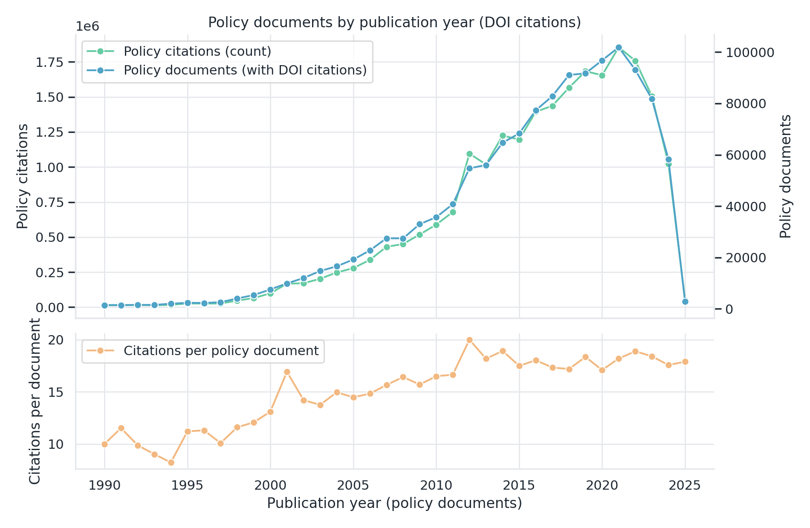
- 관찰: 2010년대 중반 이후 DOI 인용 규모는 빠르게 증가했고 2021년 전후 정점이 관측된다.
- 해석: 2022년 이후 하락 구간은 즉시 추세 반전으로 단정하기보다 발행 후 인용 누적 지연(약 4-5년) 효과를 먼저 점검해야 한다.
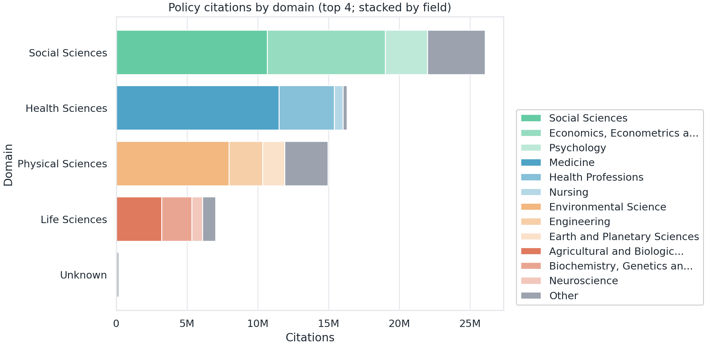
- 관찰: 도메인 집계(다중라벨 합산)에서 상위 3개 도메인이 88.8%를 차지한다.
- 해석: 이는 우열이 아니라 정책근거 수요가 특정 의제·분야 채널에 집중된 구조적 관측이다.
- 점검 신호: 상위 3개 도메인 비중의 분기별 상승/유지/완화 추세를 함께 본다.
1.3 토픽은 같은 속도로 움직이지 않는다
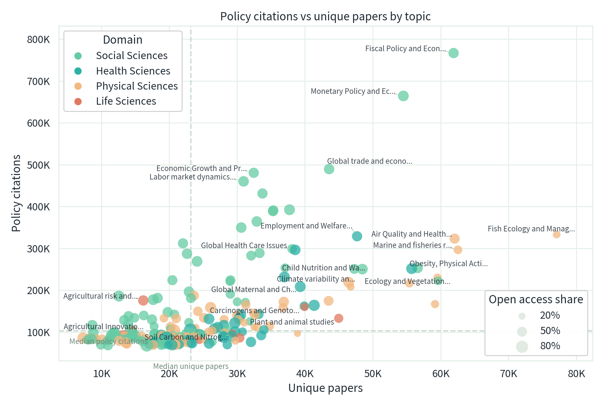
- 관찰: 고유 논문 수와 정책 인용은 항상 같은 방향으로 움직이지 않는다. 연구 생산량이 큰 토픽이 정책에서 반드시 많이 쓰이는 것은 아니다.
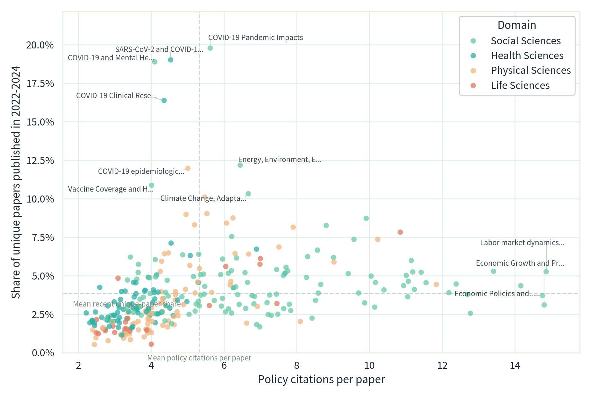
- 해석: 정책근거에는 “성숙 토픽”과 “고성장 토픽”이 공존하며, 의제별 업데이트 주기와 합성 속도가 다를 수 있다.
- 점검 신호: 최근성 상위 토픽의 순위와 강도 지표가 다음 분기에도 유지되는지 확인한다.
1장 소결론
인용률 숫자 하나보다 중요한 것은, 근거가 모이고 전달되는 연결 구조다.
2. 근거는 어디에 쌓이는가: 허브 구조
2장은 질문 1을 직접 검증한다. 정책근거가 분산되는지, 소수 채널에 집중되는지를 본다.
2장 핵심 문장
총량과 밀도를 분리해 보면, 허브 집중 구조가 더 선명해진다.
2.1 총량과 밀도는 다른 신호다
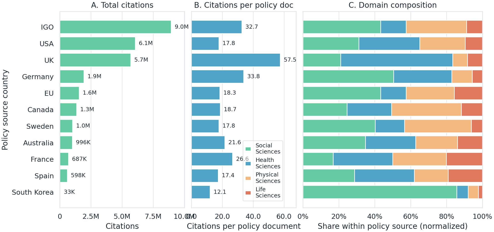
- 관찰: 그림 5A(총량)와 5B(문헌당 평균)의 상위 순서는 일치하지 않는다.
- 해석: “문서를 많이 만드는 채널”과 “문서 한 편에 근거를 많이 담는 채널”은 구분된다.
- 점검 신호: 총량 상위군과 밀도 상위군의 교집합 변화(확대/축소)를 추적한다.
2.2 출처 유형이 바뀌면 근거 사용 방식도 바뀐다
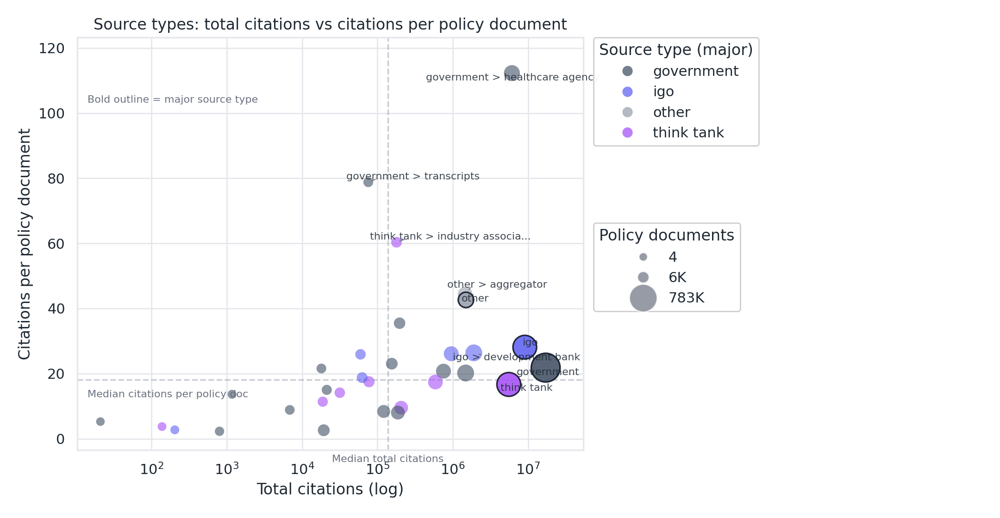
- 관찰: 출처 유형별로도 총량과 밀도 순위가 다르게 나타난다.
- 해석: 총량이 큰 유형이 문헌당 평균 인용까지 높다고 단정할 수 없다.
- 해석 보정: 출처 유형 태그는 상호배타적이지 않아(중복 가능), 점유율 자체보다 유형 간 패턴 차이를 읽는 것이 중요하다.
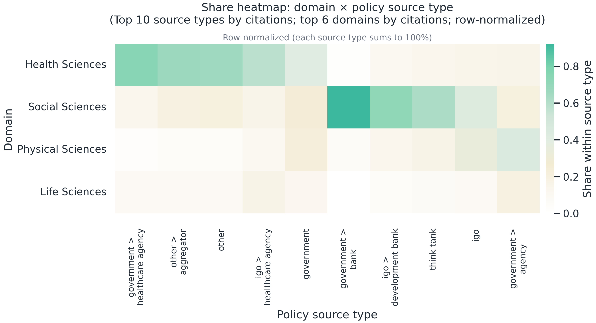
- 관찰: 출처 유형별 도메인 구성은 뚜렷이 다르다.
- 해석: 정책근거 인용은 연구 공급 요인뿐 아니라 출처의 역할·의제 구성과 함께 나타난다.
- 점검 신호: 특정 유형에서 도메인 편중이 강화되는지 확인한다.
2장 소결론
허브 집중은 전달 효율을 만들 수 있지만, 집중도가 높아질수록 특정 채널 변동에 민감해질 수 있다. 따라서 다음 점검에서는 상위 채널 집중도의 추세(상승/유지/완화)를 함께 본다.
3. 한국의 위치: 유입과 조달의 비대칭
3장은 질문 2를 검증한다. 한국을 “한 점수”로 보지 않고 유입(한국 연구가 어디에서 인용되는가)과 조달(한국 정책이 누구 연구를 인용하는가)을 분리해 읽는다.
3장 핵심 문장
한국은 “누가 한국 연구를 인용하는가”와 “한국이 누구 연구를 인용하는가”가 다르다.
3.1 한국의 도메인 수요-공급은 어긋난다
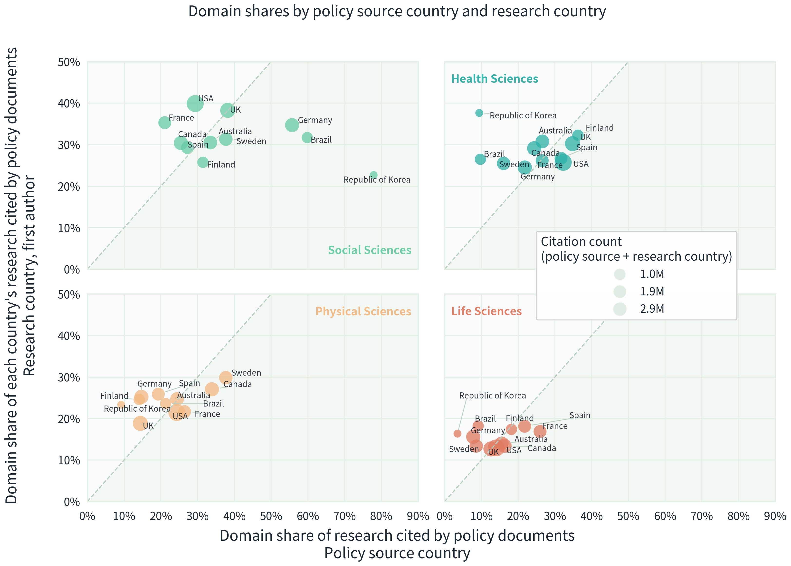
- 관찰: 가로축(한국 정책의 조달 구성)과 세로축(한국 연구의 유입 구성)을 비교하면, 한국은 Social Sciences에서 점선 아래, 나머지 도메인에서 점선 위에 위치한다.
- 해석: 도메인별 수요-공급 미스매치가 존재하며, 유입 전략과 조달 전략을 분리 설계해야 한다.
- 점검 신호: 도메인별 절대 격차(pp)의 축소/확대 추세를 추적한다.
3.2 한국 정책은 어디서 근거를 조달하는가
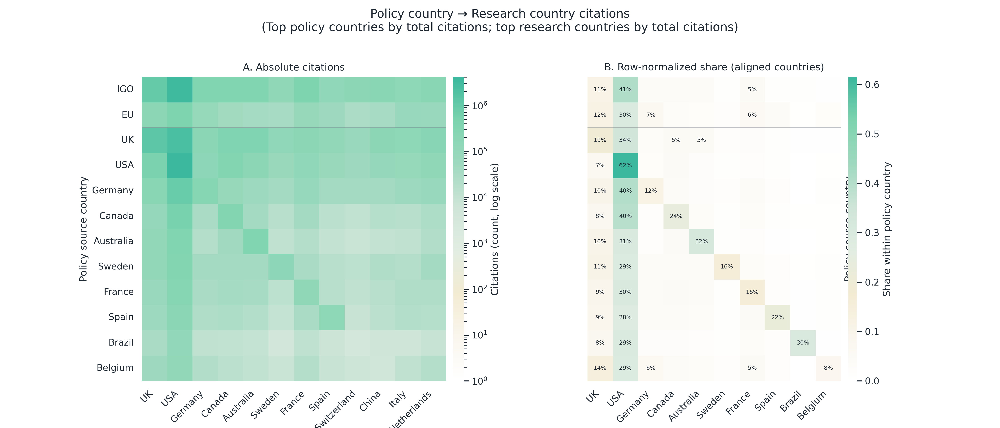
- 관찰: 정책 출처별 조달선(어느 나라 연구를 끌어오는가)의 폭이 다르다.
- 해석: 국제기구처럼 다자 성격이 강한 출처는 포트폴리오가 넓고, 일부 출처는 자국/특정국 의존이 높다.
- 점검 신호: 한국 조달의 상위 1개국 비중, 상위 3개국 합계를 동시에 본다.
3.3 한국의 자국 인용 비중과 두 방향 경로
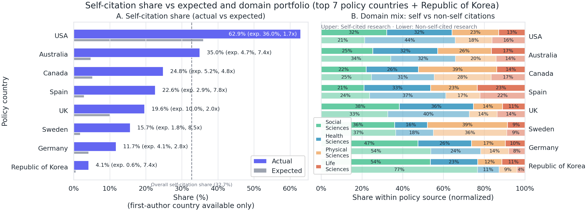
- 관찰: 한국의 자국 인용 비중은 1저자 국가코드 확인분 기준 약 4.1%다.
- 해석: 한국 표본(정책 출처 문헌 2,742편)은 작고 결측 영향이 있어 순위보다 추세 점검 지표로 읽어야 한다.
- 해석 보정: 기대치 대비 비교는 도메인 가중 기준선에 대한 상대 비교이며 절대평가가 아니다.
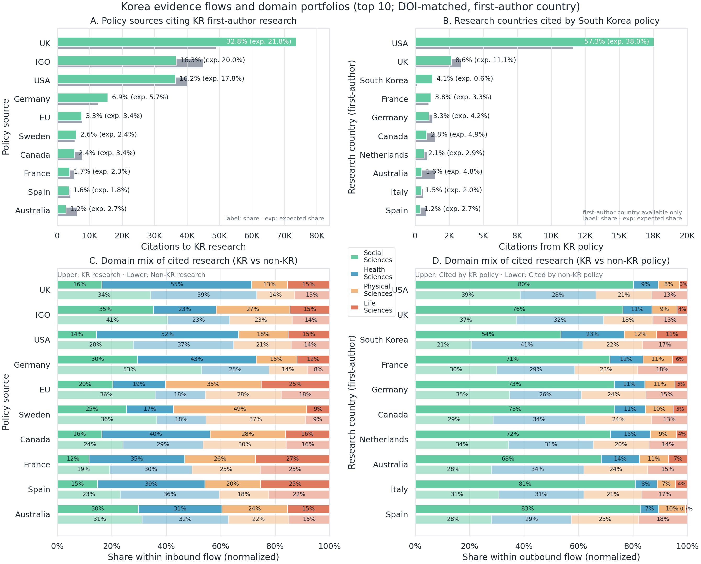
- 관찰: 유입 방향은 영국 32.8%, 국제기구 16.3%, 미국 16.2% 비중이 크고, 조달 방향은 미국 연구 비중 57.3%(1저자 국가코드 확인분)가 높다.
- 해석: 유입·조달의 상위 채널이 다르므로, 단일 처방으로는 비대칭을 설명하기 어렵다.
- 해석 보정: 유입·조달 비중은 각 방향 내부 정규화 값이므로 방향 간 절대 크기 비교 지표가 아니다.
- 점검 신호: 유입 상위 3채널 집중도와 조달 상위 1개국 비중을 분리 추적한다.
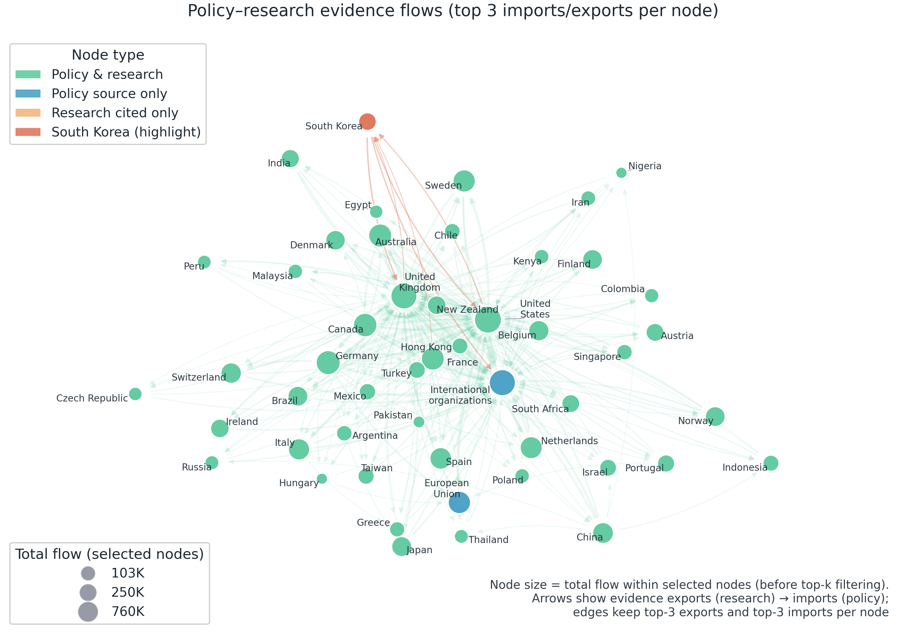
그림 12는 이 비대칭을 네트워크 관점에서 요약한다.
상위 노드와 상위 연결만 남긴 요약 지도이므로, 완전한 전체망이 아니라 큰 경로 구조를 읽는 도구로 해석해야 한다.
3장 소결론
한국의 유입과 조달은 다른 경로 구조를 보인다. 따라서 전략도 단일 처방이 아니라 경로별 진단이 필요하다.
4. 그래서 무엇을 점검할 것인가
4장은 “결론 강화”보다 “반복 가능한 점검”에 초점을 둔다. 같은 질문, 같은 지표, 같은 단위로 분기마다 비교할 수 있어야 한다.
4.1 다음 분기 대표 점검(동일 포맷)
| 점검 축 | 현재 스냅샷(기준값) | 다음 분기 질문 | 경보 신호(예시) |
|---|---|---|---|
| 허브 집중(도메인) | 상위 3개 도메인 88.8% | 집중이 완화/유지/심화 중 어디로 가는가 | 상위 3개 비중 연속 상승 |
| 한국 조달 편중 | 미국 연구 조달 57.3%(1저자 국가코드 확인분) | 조달 포트폴리오가 다변화되는가 | 상위 1개국 비중 상승 + 상위권 고착 |
| 한국 유입 채널 | 영국+국제기구+미국 합계 65.3% | 유입 채널이 넓어지는가 | 상위 3채널 합계 상승 |
| 자국 인용 위치 | 자국 인용 4.1%(1저자 국가코드 확인분) | 표본 확대 후에도 위치가 안정적인가 | 표본 확대에도 지표 급변 |
4.2 후속 분석 로드맵 (짧게)
- DOI 밖 인용(보고서·웹·법령) 포함
- 정책문헌 간 인용 결합
- 인용 문맥(근거 제시/배경 설명/비판) 분리
- 정책 의제 분류(SDG 등)와 토픽 분류를 연결한 이중 프레임 점검
각 절의 상세 점검 목록은 다음 질문에서 확인할 수 있다.
추가 그림과 진단 노트는 부록에서 확인할 수 있다.
4장 소결론
지금 필요한 것은 더 강한 단정이 아니라, 반복 가능한 관측 체계다.
5. 이 브리프의 해석 범위와 Extended Report 안내
5장은 앞 절의 결론을 “어디까지 해석할 것인가” 기준으로 고정한다.
5.1 이 브리프가 말하는 것
- 관찰: 정책근거는 소수 허브 채널에 집중되는 구조가 반복 관측된다(그림 2, 5, 7, 8).
- 관찰: 한국의 근거 유입과 조달은 서로 다른 경로 구조를 보인다(그림 6, 9, 10, 11, 12).
- 해석: 단일 순위 비교보다 경로별 반복 점검 체계를 먼저 세워야 한다.
5.2 이 브리프가 말하지 않는 것
- 해석 경계: 인용량 자체를 정책 영향·성과로 직접 해석하지 않는다.
- 범위 경계: DOI 밖 근거(웹·법령·보고서 등)는 본문 범위 밖이다.
- 시간 경계: 한국 수치는 표본 규모와 결측·스냅샷 업데이트에 따라 변동될 수 있다.
5.3 방법론·정합성은 Extended Report에서 확인
| 확인하려는 질문 | 이동 |
|---|---|
| 분모·범위·결측 조건이 무엇인가 | 방법론·데이터 정합성, 매칭·결측 |
| 지표 정의·해석 가드레일을 확인하고 싶다 | 핵심 지표 정의, 해석 가드레일 |
| 상세 표·추가 진단이 필요하다 | 부록 A. 커버리지·태깅, 부록 B. 정의·해석, 부록 C. 추가 그림 |
| 다음 분기 점검 체크리스트를 보고 싶다 | 다음 질문 |
5.4 맺음말
핵심 결론은 두 가지다. 정책근거는 허브에 집중되고, 한국의 유입과 조달은 비대칭이다.
한국 비교를 더 안정적으로 읽으려면 국내 정책문헌 참고문헌을 DOI·URL 같은 식별자 기반으로 구조화해 같은 프레임으로 재계산해야 한다.
Kim, Park, & Yoon (2025)의 NKIS 기반 참고문헌 구조화 시도는 그 출발점에 해당한다.
다음 단계는 결론을 키우는 일이 아니라 관측 체계를 표준화하는 일이다.
참고문헌
- Fang, Z., Dudek, J., Noyons, E., & Costas, R. (2024). Science cited in policy documents: Evidence from the Overton database. arXiv:2407.09854. https://arxiv.org/abs/2407.09854
- Furnas, Alexander C., LaPira, Timothy M., & Wang, Dashun. (2025). Partisan disparities in the use of science in policy. Science, 388(6745), 362–367. https://doi.org/10.1126/science.adt9895
- Kim, M., Park, J., & Yoon, J. (2025). Examining the use of international and domestic references in policy research (ISSI 2025 poster abstract draft; NKIS-based; #347; Poster ID: 105).
- Pinheiro, H., Vignola-Gagné, E., & Campbell, D. (2021). A large-scale validation of the relationship between cross-disciplinary research and its uptake in policy-related documents, using the novel Overton altmetrics database. Quantitative Science Studies, 2(2), 616–642. https://doi.org/10.1162/qss_a_00137
- Springer Nature. (n.d.). From publications to policy: The impact of research towards achieving the Sustainable Development Goals (SDG Impact Report). https://stories.springernature.com/sdg-impact-report/index.html
- Szomszor, M., & Adie, E. (2022). Overton: A bibliometric database of policy document citations. Quantitative Science Studies, 3(3), 624–650. https://doi.org/10.1162/qss_a_00204
Footnotes
본 보고서에서 “허브”는 정책문헌에서 DOI로 매칭된 학술 인용이 특히 많이 관측되는 정책 출처를 뜻한다. 평판·품질의 평가가 아니라 구조적 관측 단위다.↩︎
본문은 데이터 브리프 톤의 결과 요약에 집중한다. 분모·분자 정의, 매칭·결측, 지표 해석 가드레일은 방법론·데이터 정합성과 부록: 데이터 적합도에서 확인할 수 있다.↩︎
“정책과 과학의 연결”을 다룬 연구는 분모가 다양하다. 예를 들어 Furnas et al. (2025)과 Springer Nature SDG Impact Report는 정책문헌을 분모로 “학술 인용이 포함된 정책문헌 비중”을 제시한다. 반면 논문을 분모로 “정책문헌에서 언급/인용되는 논문 비중”을 분석하는 연구도 있다(Pinheiro et al., 2021; Fang et al., 2024). 본 보고서는 DOI로 연결되는 정책문헌->학술논문 인용 로그(및 인용된 논문 집합) 안에서, 집중도/구성/경로를 진단한다. 따라서 숫자를 직접 비교하기보다 “무엇을 분모로 썼는가”를 먼저 확인해야 한다.↩︎